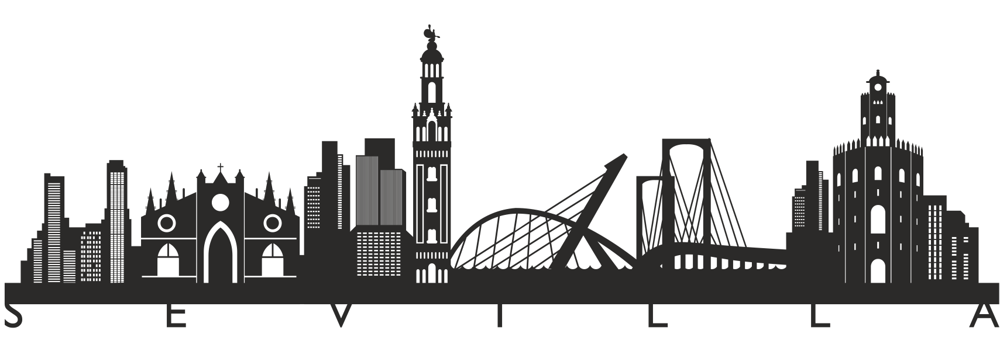

Hello all!
I'm Ignacio, a Front-end Developer from Seville, Spain.

I’m a Front-end software engineer with a background in sales and business management, bringing a user-centered mindset and strong communication skills into everything I build.
Technical Focus
I’ve contributed to high-impact projects, from optimizing checkout flows for METRO's marketplace to helping improve redesigns, performance, and analytics for ZARA ecommerce as part of the Grid and Catalog team.
I lead UI architecture decisions, break complex initiatives into clear deliverables, and partner with design, product, and backend teams to ship features that are accessible, performant, and maintainable. I like to put focus on Web Vitals, testing strategy, and observability from day one, while supporting teammates and continuously improving delivery through CI/CD, code reviews, and incident learnings.
A big part of my work is design system thinking. I use Storybook to build and evolve reusable components that teams can trust, and I enjoy helping other developers adopt shared patterns that keep the UI consistent and scalable. I also like leading the communication around component decisions and writing clear documentation so designers and engineers can move faster together.
Here’s a quick overview of the technologies and tools I work with:
- HTML, CSS, JavaScript / TypeScript
- Angular with NGRX
- React and Next.js (Server Components)
- Tailwind CSS
- Node.js (Express)
- PostgreSQL
- Cypress for E2E testing
- Sentry Monitoring integration
- Storybook
- Jest, Testing Library
- CI/CD with GitLab / Github Actions
- AI-assisted development for daily coding, debugging, and refactoring
- Agentic coding workflows and custom agents to automate repetitive tasks
Curious to learn more? Feel free to connect with me on LinkedIn. I’m always open to new ideas, collaborations, and interesting tech discussions!